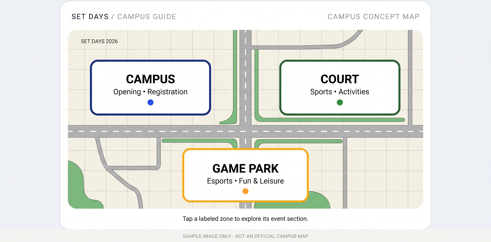

Where Curious Minds Meet Next-Gen Innovation
Note: All schedules, venues, guests, and activities listed on this website are fictional concepts created for academic purposes.
Welcome to the official student portal for SET Days 2026! Join fellow students, faculty, and tech enthusiasts for three days of hands-on workshops, friendly competitions, and inspiring showcases.
Event Dates: December 2–4, 2026
SET Days (School of Engineering and Technology Days) 2026 is a three-day annual celebration designed to showcase student innovation, technical skills, and academic collaboration. Throughout the event, the campus transforms into a hub of creativity where theory meets real-world application.
The primary purpose of SET Days 2026 is to bridge the gap between classroom learning and emerging industry trends. By hosting interactive exhibits, coding challenges, and engineering showcases, the event aims to spark curiosity and encourage problem-solving among students.
This event is open to all undergraduate students, faculty members, student organizations, and aspiring innovators within the School of Engineering and Technology. Whether you are a first-year student exploring your interests or a graduating senior presenting a capstone project, there is a place for you here.
Below are six featured activities designed to engage students across different disciplines:
| Date | Time | Activity | Venue |
|---|---|---|---|
| Dec. 2, 2026 | 9:00 AM | Opening Program & Keynote Address | Campus — Main Hall |
| Dec. 2, 2026 | 1:30 PM | Interactive Drone & Robotics Exhibition | Campus — Open Plaza |
| Dec. 3, 2026 | 10:00 AM | Applied AI & Software Design Seminar | Campus — Lecture Rooms |
| Dec. 3, 2026 | 2:00 PM | Structural Bridge-Building Competition | Court — Multi-Purpose Court |
| Dec. 4, 2026 | 9:00 AM | Competition: Campus Smart-Solutions Hackathon | Game Park — Activity Lab |
| Dec. 4, 2026 | 1:00 PM | Science & Tech Quiz & Closing Ceremony | Campus — Main Hall |
The central hub for SET Days 2026 is our primary school grounds, subdivided into three zones: the main Campus (for registration, lectures, and ceremonies), the Court (for outdoor design and engineering competitions), and the Game Park (for the Hackathon and programming labs).
Interactive Guide: Tap or click any of the three color-coded zones below to jump directly to those specific activities!

Role: Lead AI Researcher at NextGen Labs | Topic: Ethical Tech for Student Builders
Dr. Reyes will share insights on how college students can build practical software tools while keeping accessibility and data privacy in mind.
Location: Game Park — Activity Lab | Format: Teams of 3–4 Students
Our flagship coding competition where student teams race against the clock to design, build, and pitch functional web or mobile prototypes.
Booth Location: Campus Plaza Table 4 | Focus: Open-Source Hardware & Prototyping
A student-led group showcasing smart home models and running quick 15-minute intro tutorials on physical computing.
Follow these simple steps to join SET Days 2026 smoothly:
New to HTML or web development before the hackathon? Review the official MDN Web Docs HTML Guide to prepare.
=======================================================
SET DAYS 2026 - REGISTRATION CONFIRMATION
=======================================================
Participant Name : Juan Dela Cruz
Student ID : 2026-00123
Selected Event : Campus Smart-Solutions Hackathon
Date & Time : Dec. 4, 2026 | 9:00 AM
Status : CONFIRMED - Present at Entrance
=======================================================